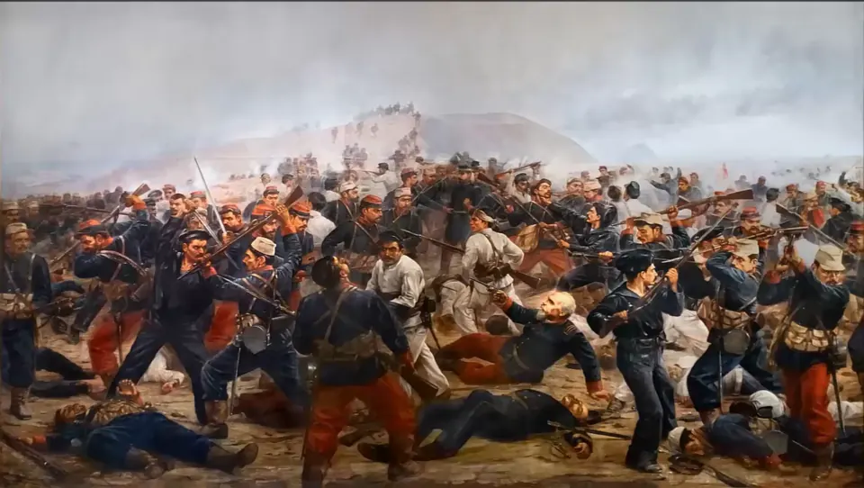

Toma del Morro de Arica

Tras la victoria chilena en la batalla del Alto de la Alianza, cerca de Tacna, el 26 de mayo de 1880, después de la cual Bolivia se retiró de la lucha, el ejército chileno avanzó sobre Arica. El puerto peruano estaba protegido por fuertes y por el Morro, defendido por una guarnición al mando del coronel Francisco Bolognesi, quien rechazó la propuesta de rendición.
En la madrugada del 7 de junio, las tropas chilenas dirigidas por el coronel Pedro Lagos asaltaron los fuertes y tomaron el Morro en un ataque rápido y muy sangriento. Murieron Bolognesi y otros jefes peruanos, como Alfonso Ugarte, a quien la tradición peruana recuerda lanzándose al mar desde el Morro con la bandera.
Con Tarapacá y Arica en su poder, Chile dominó el sur peruano y luego avanzó hacia Lima. El Tratado de Ancón (1883) dejó Tacna y Arica bajo administración chilena por diez años, tras los cuales un plebiscito decidiría su destino. El plebiscito nunca se realizó y hubo décadas de tensión. Finalmente, el Tratado de Lima de 1929 estableció que Tacna volviera al Perú y Arica quedara en Chile. En Perú, Bolognesi es símbolo de la defensa de la patria.
Versión para niños
Arica era una ciudad del Perú con un cerro muy alto junto al mar, llamado el Morro, donde había fuertes con cañones. El 7 de junio de 1880, durante la Guerra del Pacífico, soldados chilenos subieron y tomaron el Morro en poco tiempo. El jefe peruano, el coronel Francisco Bolognesi, murió defendiendo la ciudad, al igual que muchos soldados de ambos lados. Años después, en 1929, Chile y Perú acordaron que Arica quedaría en Chile y que Tacna volvería al Perú.
Para maestros
Nivel sugerido: 1° medio
Objetivo: Comprender la Toma del Morro de Arica en el contexto de la Guerra del Pacífico y explicar cómo se resolvió la situación de Tacna y Arica.
Preguntas para la clase:
- ¿Por qué el Morro era una posición tan importante?
- ¿Qué establecía el Tratado de Ancón sobre Tacna y Arica, y por qué el plebiscito nunca se hizo?
- ¿Cómo influye el Tratado de Lima de 1929 en la vida actual de Arica y Tacna?
Actividad (20–30 min): Los estudiantes elaboran una línea de tiempo entre 1880 y 1929 con la Toma del Morro, el Tratado de Ancón, el plazo del plebiscito y el Tratado de Lima. Luego, a partir de un mapa, comentan cómo es hoy la relación entre Arica y Tacna (frontera, comercio, familias, memoria de la guerra en cada ciudad).
Fuentes sugeridas: Memoria Chilena; Museo Histórico Nacional; Biblioteca del Congreso Nacional (BCN).
Objetivos de Aprendizaje (Currículum Nacional)
- 6° básico · HI06 OA 05 Describir cómo se conformó el territorio de Chile durante el siglo XIX … la Guerra del Pacífico y diversos conflictos bélicos
- 1° medio · HI1M OA 15 Analizar la guerra del Pacífico considerando el conflicto económico en torno al salitre, el impacto de la guerra en múltiples ámbitos de la sociedad chilena
Revisión humana pendiente. Cómo se revisa · Reportar un error
Cómo citar: Historia de Chile. (2026). Toma del Morro de Arica. En Historia de Chile: atlas y línea de tiempo. https://moises-salgado.github.io/historia-de-chile/momento/toma-del-morro-de-arica.html